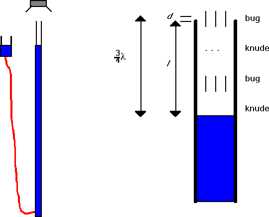
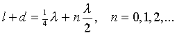

, hvor t
er temperaturen i °C.
, hvor t
er temperaturen i °C. Formålet er at undersøge stående bølger i et resonansrør, samt at bestemme lydens fart i atmosfærisk luft.
Opstillingen fremgår af figurerne herunder. Desuden bruges en tonegenerator og en frekvenstæller.

Figur 1: Forsøgsopstilling. Figur 2: Den anden resonans i røret
Højttaleren anbringes vha. et stativ over resonansrørets munding, således at lyden fra denne sendes ned i røret. Højttaleren forbindes til tonegeneratoren. Frekvenstælleren forbindes også til tonegeneratoren.
Tonegeneratoren indstilles til en frekvens på ca. 800 Hz. Den præcise frekvens aflæses på frekvenstælleren og noteres.
Niveaubeholderen, der er fyldt med vand, forskydes opad, således at resonansrøret fyldes med vand - indtil vandet står nogle få cm fra rørets kant.
Nu sænkes niveaubeholderen, indtil vandstanden i røret er sådan, at der høres en kraftig forstærkning af lyden - også kaldet resonans. Afstanden fra rørets kant til vandoverfladen noteres (nøjagtighed 0.1 cm). Dernæst sænkes vandstanden, indtil næste resonans høres. Igen noteres afstanden fra rørets kant til vandoverfladen - osv. Således fortsættes indtil niveaubeholderen ikke kan sænkes yderligere. Endelig noteres temperaturen i lokalet.
Forsøget gentages med frekvenserne ca. 1500 Hz og ca. 2000 Hz. Husk igen, at den præcise frekvens aflæses på frekvenstælleren.
Du skal altid have lavet et måleskema i forvejen. Denne gang skal du have udfyldt det. Altså beregn alle resonanser for et rør der er 1.5 m langt. Det vil gøre det meget lettere for dig at lave forsøget! Når du laver forsøget, bør du være opmærksom på, at der skal være lige langt mellem knuderne.
Under afsnittet teori skal du bl.a. gøre følgende: tegn 3 figurer, som viser beliggenhed af svingningsbuge og svingningsknuder for de tre første resonanser i røret (ved samme frekvens), således at de tre figurer har det rigtige indbyrdes størrelsesforhold! se om nødvendigt den første af figurerne på side 1 i vejledningen.
Den første resonans i røret tildeles nummeret 0, den næste 1 osv. Kaldes rørets længde for l og resonansnummeret for n, gælder følgende formel:

hvor d er det stykke, som svingningsbugen ligger uden for rørets munding (se fig. 2).
Formlen for rørlængden l udtrykt ved bølgelængden l (og d) skrives på ved hver figur.
Besvar desuden spørgsmålet: hvad er afstanden mellem to på hinanden følgende resonansrørlængder - udtrykt vha. bølgelængden?
Desuden skal du anføre formlen for lydens fart - udtrykt vha. bølgelængden og frekvensen.
Udregn »tabelværdien« for lydens fart vha. følgende formel:
, hvor t
er temperaturen i °C.
Ved behandlingen af måleresultaterne skal du afbilde resonansrørlængderne som funktion af deres nummer (husk, at det første er 0). Alle 3 forsøg indtegnes i samme koordinatsystem. Dernæst bestemmes hældningskoefficienterne - og udfra disse findes bølgelængderne.
Endelig beregnes lydens fart i hvert af de 3 forsøg. Disse værdier sammenlignes med lydens fart beregnet udfra temperaturen i lokalet.
Benyt et edb-program til graftegning og regn liniernes hældning ud vha. lineær regression.